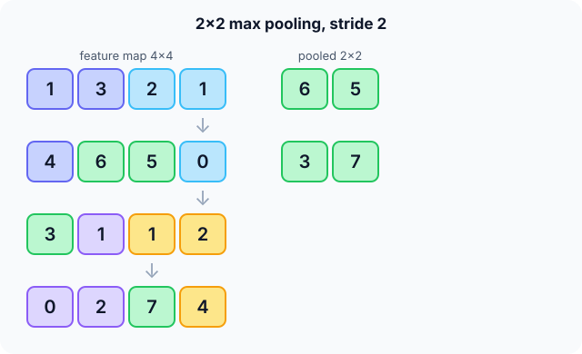

Prerequisites
- Convolutional layers and feature maps.
- Max and average of a small set of numbers.
- The conv output-size formula.
The analogy
Everyday analogy
Think of summarising a city map by district: for each district you only note its tallest building. You lose the exact street, but keep where the tall buildings are, roughly.
Max pooling does that to a feature map: for each small block it keeps the strongest response.
How it works
Standard setting: 2 × 2 windows with stride 2: non-overlapping blocks that halve the height and width. Pooling is applied to each channel separately.
Start with max pooling by hand
Feature map rows: [1, 3, 2, 1], [4, 6, 5, 0], [3, 1, 1, 2], [0, 2, 7, 4]. 2 × 2 max pooling, stride 2. Predict, then open "Check".
Example: predict before you read
Step 1. Top-left block {1, 3, 4, 6} and top-right block {2, 1, 5, 0}.
Check
Maxima 6 and 5.
Step 2. Cover the next line and guess: the two bottom blocks.
Check
Bottom-left {3, 1, 0, 2} → 3; bottom-right {1, 2, 7, 4} → 7.
Step 3. Write the pooled map and its size.
Check
$\begin{bmatrix} 6 & 5 \\ 3 & 7 \end{bmatrix}$: 2 × 2, a quarter of the values.

Quick recall: Before reading further, cover the text above and say out loud: what does max pooling keep, and what does it discard?
Check your answer
It keeps the strongest value in each block (whether and how strongly a feature appears) and discards its exact position within the block.
Finish the picture: average pooling and shifts
Same feature map.
- Average pooling. Predict the 2 × 2 result.
Check
$\begin{bmatrix} 3.5 & 2 \\ 1.5 & 3.5 \end{bmatrix}$ (block sums 14, 8, 6, 14 divided by 4).
- Swap the 7 with its right neighbour, so row 4 becomes [0, 2, 4, 7]. Predict the max-pooled output.
Check
Unchanged: 7 is still inside the bottom-right block, so its max is still 7. Small shifts inside a block don't change the output (a shift across a block border would).
Quick recall: Without scrolling up, say out loud: what does average pooling give for the top-left block {1, 3, 4, 6}?
Check your answer
$14/4 = 3.5$.
Full worked calculation
The page's 4 × 4 feature map, $\begin{bmatrix} 1 & 3 & 2 & 1 \\ 4 & 6 & 5 & 0 \\ 3 & 1 & 1 & 2 \\ 0 & 2 & 7 & 4 \end{bmatrix}$, pooled three ways, then the backward pass, which is where max pooling is less obvious.
| Block | Values | Max | Average | Position of the max |
|---|---|---|---|---|
| top-left | 1, 3, 4, 6 | 6 | 3.5 | row 1, col 1 |
| top-right | 2, 1, 5, 0 | 5 | 2 | row 1, col 2 |
| bottom-left | 3, 1, 0, 2 | 3 | 1.5 | row 2, col 0 |
| bottom-right | 1, 2, 7, 4 | 7 | 3.5 | row 3, col 2 |
-
1Split into 2 × 2 blocks (stride 2)
$$4 \times 4 \;\to\; 4 \text{ blocks} \;\to\; 2 \times 2 \text{ output}$$With a 2 × 2 window and stride 2, the blocks don't overlap. Every output number summarises one block.
-
2Max pooling
$$\max(1, 3, 4, 6) = 6, \; \max(2, 1, 5, 0) = 5, \; \max(3, 1, 0, 2) = 3, \; \max(1, 2, 7, 4) = 7 \;\Rightarrow\; \begin{bmatrix} 6 & 5 \\ 3 & 7 \end{bmatrix}$$Keeps the strongest response in each block: "was the feature present here, and how strongly?".
-
3Average pooling
$$\frac{1 + 3 + 4 + 6}{4} = 3.5, \; \frac{2 + 1 + 5 + 0}{4} = 2, \; \frac{3 + 1 + 0 + 2}{4} = 1.5, \; \frac{1 + 2 + 7 + 4}{4} = 3.5$$Keeps the overall level of each block. Note top-left and bottom-right both give 3.5, although bottom-right has the strongest single value (7): averaging dilutes peaks.
-
4Global average pooling
$$\frac{1}{16}\sum_{i,j} x_{ij} = \frac{42}{16} = 2.625$$One number for the whole map. Modern CNNs end with this instead of flattening, so a map of any size becomes one value per channel, with no weights to learn.
-
5Backward pass of max pooling
$$\text{upstream gradient } \begin{bmatrix} g_{00} & g_{01} \\ g_{10} & g_{11} \end{bmatrix} \;\Rightarrow\; g_{00} \text{ goes to the 6, } g_{01} \text{ to the 5, } g_{10} \text{ to the 3, } g_{11} \text{ to the 7; the other 12 cells get } 0$$Only the winning value influenced the output, so only it receives gradient. That is why we remember the position of each max during the forward pass. Average pooling instead splits each gradient into four equal shares of $g/4$.
-
6Robustness to a small shift
$$\text{move the 7 one cell left (to col 1): it is now in the bottom-left block} \;\Rightarrow\; \begin{bmatrix} 6 & 5 \\ 7 & 4 \end{bmatrix}$$Shifts within a block change nothing; a shift across a block border does change the output. Pooling gives a little tolerance to position, not full invariance.
What the numbers tell us
Max pooling: $\begin{bmatrix} 6 & 5 \\ 3 & 7 \end{bmatrix}$; average pooling: $\begin{bmatrix} 3.5 & 2 \\ 1.5 & 3.5 \end{bmatrix}$; global average: 2.625. None has parameters.
It cuts the map size by 4, so later layers are cheaper and see a larger area of the image. In backprop, max pooling routes each gradient to the single winning cell.
The rule in plain words
Slide a window (usually 2 × 2, stride 2) over each channel and replace each window by its maximum (max pooling) or mean (average pooling).
Use it after conv + ReLU blocks to halve the spatial size; global average pooling at the end turns each channel into one number.
Quick recall: Before you read the code, describe 2 × 2 max pooling in your own words. Then check below.
Check your answer
For each non-overlapping 2 × 2 block, look at its four values and write the largest into the matching cell of a half-size output.
The code
Read this code after you have pooled the map by hand. It will make more sense.
void maxpool2x2(double fm[][4], int n, double out[][2]) { /* stride 2, n even */
for (int r = 0; r < n / 2; r++)
for (int c = 0; c < n / 2; c++) {
double m = fm[2 * r][2 * c];
for (int i = 0; i < 2; i++)
for (int j = 0; j < 2; j++)
if (fm[2 * r + i][2 * c + j] > m) m = fm[2 * r + i][2 * c + j];
out[r][c] = m; /* strongest response in the block */
}
}Definition
What you just did, in one line: pooling downsamples each feature map by summarising small windows, taking the maximum (max pooling) or the average (average pooling) of each.
flowchart LR
A["conv + ReLU: 32×32×16"] --> B["2×2 max pool, stride 2"]
B --> C["16×16×16"]
C --> D["next conv layer"]
Putting numbers on it
Quick recall: Before looking at the formula, predict: how many learned parameters does a pooling layer have?
Check your answer
None. It applies a fixed rule (max or average).
Pooling uses the same size formula as convolution, with window $F$ and stride $S$:
$$\text{out} = \frac{W - F}{S} + 1 = \frac{4 - 2}{2} + 1 = 2, \qquad \text{values kept} = \tfrac14 \text{ for } 2 \times 2,\; S = 2$$| Pooling | Top-left block {1, 3, 4, 6} | Learned parameters | Typical use |
|---|---|---|---|
| Max | 6 | 0 | After conv layers |
| Average | 3.5 | 0 | Smoother summaries |
| Global average | mean of the whole map | 0 | Before the final classifier |
Warning
Pooling throws away precise positions. That's good for classification ("is there a cat?") but bad for tasks that need exact locations, like segmentation, which use fewer pooling layers or recover detail with skip connections.
Exam tip
Do the block-by-block maxima on paper and give the output shape. Remember that pooling has no parameters and works per channel, so the number of channels doesn't change.
Common mistakes
- Saying pooling has learned weights.
- Reducing the number of channels with pooling; it only shrinks height and width.
- Using overlapping windows by accident (stride smaller than the window) and getting an unexpected size.
Try it yourself
Exercise 1 (warm-up)
Max pool the 2 × 2 map [[2, 9], [4, 1]] with a 2 × 2 window.
Hint
One block.
Answer
9.
Exercise 2 (a bit harder)
A 112 × 112 × 64 feature map goes through 2 × 2 max pooling with stride 2, then another. What is the shape, and by what factor did the number of values shrink? Write your answer down before you open it.
Show answer
56 × 56 × 64, then 28 × 28 × 64. Values shrink by 4 each time, 16× in total.
Did you know?
Did you know?
Some modern architectures replace pooling by convolutions with stride 2, letting the network learn how to downsample.
Global average pooling, introduced in the Network-in-Network paper (2013), lets the same CNN accept images of different sizes before the classifier.
Key points to remember
If you remember one thing from each line, remember the because.
- Max pooling keeps the strongest response because it takes the maximum of each block.
- It shrinks maps by 4× because a 2 × 2 window with stride 2 halves both height and width.
- It adds shift tolerance because small moves inside a block don't change the maximum.
- It has no parameters because it applies a fixed rule.
- Channels are unchanged because pooling acts on each channel separately.
Self-check questions
Answer these in order, out loud. They follow the page, so your answers become the script of your video.
- How is max pooling like noting the tallest building per district?
Sample answer
You lose the exact street but keep where the tall buildings roughly are; max pooling keeps the strongest value per block.
- Max pool the 4 × 4 map [1, 3, 2, 1], [4, 6, 5, 0], [3, 1, 1, 2], [0, 2, 7, 4].
Sample answer
[[6, 5], [3, 7]].
- Why does the code index the input with
2 * r + i?A good answer mentions the stride.
Sample answer
Output cell $(r, c)$ covers the input block starting at row $2r$ and column $2c$ (stride 2); $i$ and $j$ move inside that 2 × 2 block.
- So what is pooling, in one sentence?
Sample answer
A parameter-free layer that downsamples each feature map by taking the maximum or average of small windows.
- Why does pooling make a CNN more tolerant to small shifts?
A good answer uses the moved 7.
Sample answer
If a strong value moves within its block, like the 7 swapping with the 4 next to it, the block's maximum doesn't change, so the output stays the same.
- What is the average-pooled result of the example map?
Sample answer
[[3.5, 2], [1.5, 3.5]].
- When is pooling a bad idea?
Sample answer
In tasks that need precise locations, like segmentation, because pooling discards exact positions.
- If you had to teach this to a friend in 2 minutes, what would you leave out, and why?
Sample answer
I'd leave out global average pooling and the size formula. I'd keep the tallest-building analogy, the 4 × 4 → [[6, 5], [3, 7]] example, and "shrink by 4, keep the strongest, no parameters".
External resources
- Stanford CS231n: Pooling layer: max and average pooling with figures.
- CNN Explainer: see pooling in an interactive CNN.
- PyTorch docs: nn.MaxPool2d: parameters and output shapes.
Videos
- YouTube search: max pooling explained: pick a short visual explainer.